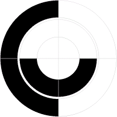

The spinner that can be used with some homebrew vectrex games is 100% compatible to the Atari Driving (not the tennis paddles!) controllers.
In Vectrex "words" the controller uses button 1 and button 2. Both buttons are connected to the spinners rotary two bit gray code encoder
Wikipedia:
The Gray code after Frank Gray, is an ordering of the binary numeral system such that two successive values differ in only one bit (binary digit).
What it boils down to is, that while rotating the paddle, contacts are rotated on a disk inside the encoder. Each contact is placed over a circular lane. The lanes are contructed such that each lane is half way an insulater and the other half is conductive. The lanes are displaced by 90 degrees.
The result looks like following picture I found:

2 bit gray code rotary disk
(picture stolen from: http://www.danielvik.com/2015/01/colecovision-driving-module.html)
When rotating and reading values from the contacts (button 1 and button 2), the resulting 2 bit values are such that they differ only ever in one bit: 00
01
11
10
To get a "direction" from the readings you must compare previous readings with the current readings of the paddle.
Transitions which are in the above order, e.g. "00->01" or "01->11" are an indicator that you rotated the wheel clockwise.
Transitions in the opposite order, e.g. "11->01" or "10->11" indicate the wheel was rotated counter clockwise.
Transitions which are not allowed, e.g. "00->11" are "errors" that should be discarded.
A possible problem with "vectrex":
Usually you do your "input" readings once per game round, that means about every 30000 cycles (or 50 times per second).
If you are able to spin the spinner so fast that you "overstep" one gray code (with above example disk, more than 90 degrees in 1/50 of a second) the grey code will "hickup" and the reading is false.
Simple schematic:
https://postimg.cc/image/6bol853c1/
Following code was provided a long time ago by "Christopher L. Tumber". It was given to the public - even if I can't remember when and where.
;read_spinner
;A routine by Christopher L. Tumber
;
;This routine reads the spinner. It requires one variable named
;
;old_spinner
;
;Which stores the previous spinner value.
;
;This routine branches to two locations as follows:
;
;player_plus: - Rotates/moves the player "plus" (ie: counterclockwise)
;player_minus: - Rotates/moves the player "minus" (ie: clockwise)
read_spinner:
lda #$00
ldb $c816
beq not_a2
lda #$02
not_a2:
ldb $c817
beq not_b2
inca
not_b2:
cmpa old_spinner
beq no_spinner_move
ldb old_spinner
sta old_spinner
cmpa #$00
bne not_spin1
cmpb #$01
beq player_plus
not_spin1:
cmpa #$01
bne not_spin2
cmpb #$03
beq player_plus
not_spin2:
cmpa #$03
bne not_spin3
cmpb #$02
beq player_plus
not_spin3:
cmpa #$02
bne not_spin4
cmpb #$00
beq player_plus
not_spin4:
cmpa #$00
bne not_spin5
cmpb #$02
beq player_minus
not_spin5:
cmpa #$02
bne not_spin6
cmpb #$03
beq player_minus
not_spin6:
cmpa #$03
bne not_spin7
cmpb #$01
beq player_minus
not_spin7:
cmpa #$01
bne not_spin8
cmpb #$00
beq player_minus
not_spin8:
no_spinner_move:
rts
player_plus:
player_minus:
::